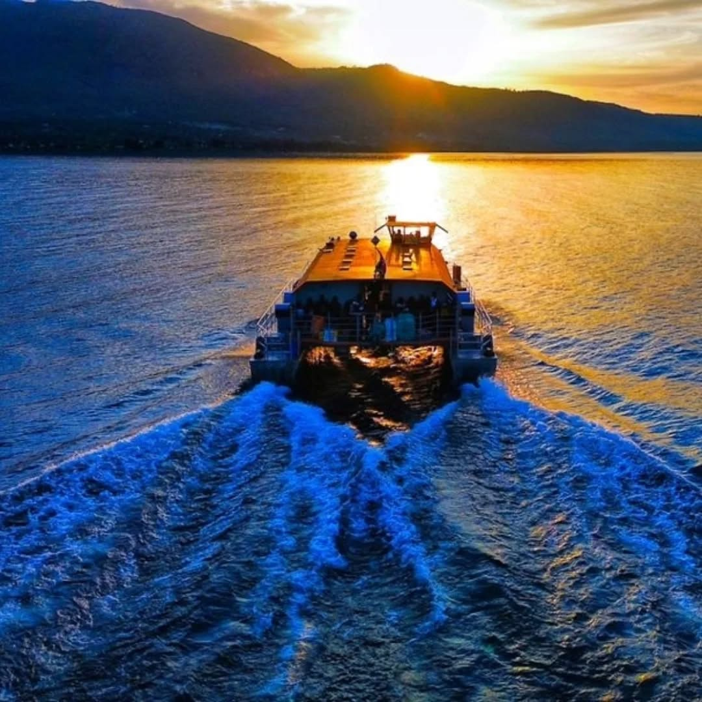

Takawiri Island is one of Kenya's best-kept travel secrets — a tiny, verdant island rising from the waters of Lake Victoria in the Homa Bay area of western Kenya. Reachable only by boat, Takawiri is a place of extraordinary peace and natural beauty — forested hillsides dropping to rocky shores, fishing boats drifting across the lake at dawn, and some of the most spectacular sunsets you will ever witness, reflected in the mirror-calm waters of the world's second largest freshwater lake.
Lake Victoria itself is a destination unlike anywhere else in Kenya — a vast inland sea covering 68,800 square kilometres and shared between Kenya, Uganda, and Tanzania. The lake's Kenyan shores are home to the Luo and Suba peoples, whose fishing culture and traditions stretch back centuries. A visit to Takawiri is both a genuine escape from the pace of modern life and a window into a side of Kenya that most travellers never see — far removed from the safari circuit and the coast, but richly rewarding for those who make the journey.
Fly from Nairobi Wilson Airport to Kisumu (approx. 45 minutes) then transfer by road to Mbita Point on the shores of Lake Victoria (approx. 2 hours). Board a traditional wooden fishing boat for the 30-minute crossing to Takawiri Island — arriving on the island as the afternoon light turns the lake gold. Check in to your island lodge — simple, comfortable, and completely surrounded by water. Afternoon exploration of the island on foot — follow the forest paths to the hilltop viewpoint for panoramic views across Lake Victoria. Sunset fishing boat excursion with local fishermen. Fresh tilapia dinner at the lodge.
Rise before dawn to join local fishermen hauling in their nets on the lake — a centuries-old tradition that still defines life on the islands of Lake Victoria. After breakfast, a guided birdwatching walk around the island — Takawiri and the surrounding Lake Victoria islands are exceptional for birding, with African fish eagles, pied kingfishers, malachite kingfishers, grey herons, and the rare papyrus yellow warbler all commonly seen. Afternoon swimming in the warm, clear waters of Lake Victoria's sheltered bay. Sunset boat trip around the island's rocky shores. Dinner and evening storytelling with your local guide about the history and legends of Lake Victoria.
Final sunrise on Lake Victoria — one of the most beautiful mornings you will experience anywhere in Kenya, as the mist rises off the water and fishing boats emerge from the early morning haze. After breakfast, boat back to Mbita Point and transfer to Kisumu Airport for return flight to Nairobi. Arrive Nairobi by early afternoon.